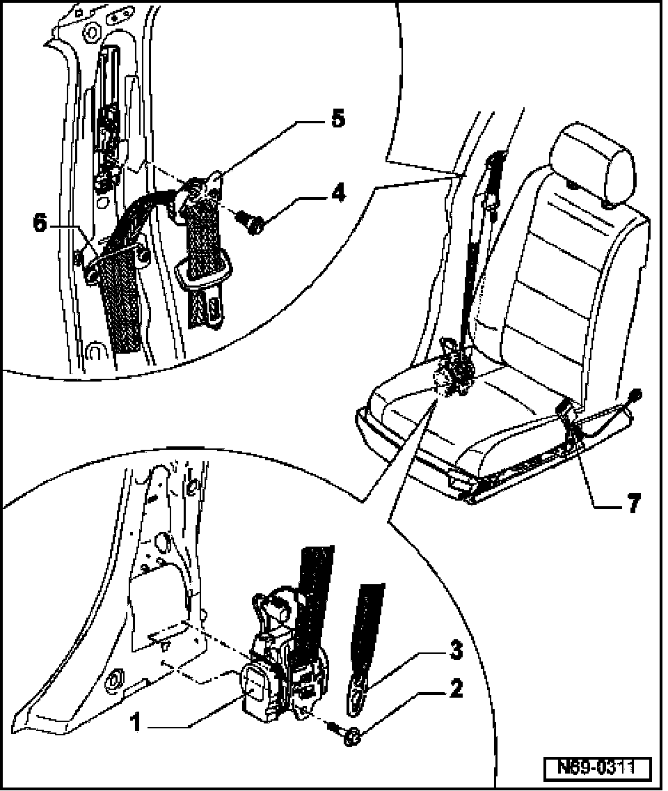

LEMON Manuals
: Even more car manuals for everyone: 1960-2025
Home
>>
Volkswagen
>>
2004
>>
Touareg (7LA) V6-3.2L (BAA)
>>
Repair and Diagnosis
>>
Restraints and Safety Systems
>>
Seat Belt Systems
>>
Seat Belt
>>
Locations
Seat Belt: Locations
Front Seat Belts, Assembly Overview

1.
B-pillar inertia reel
2.
Hex head bolt
-
50 Nm
3.
Belt anchor
-
Removing Belt anchor
4.
Hex head bolt
-
50 Nm
5.
Belt relay
6.
Belt guide
7.
Belt latch